if (!require("BiocManager", quietly = TRUE))
install.packages("BiocManager")
BiocManager::install(c("SingleCellExperiment", "TSCAN", "M3Drop", "monocle", "destiny", "scater", "slingshot"))[Pseudotime] Trajectory inference and analysis of scRNA-seq data
Introduction
This notebook encompasses a brief review of trajectory / path / lineage tracing utilizing pseudotime strategies with several modern R libraries, including Monocle, Slingshot, TSCAN, and destiny.
What is pseudotime? The distance between a cell and the start of the trajectory, measured along the shortest path. The trajectory’s total length is defined in terms of the total amount of transcriptional change that a cell undergoes as it moves from the starting state to the end state (Trapnell).
For the purpose of this playground, we will use a SMART-Seq2 single cell RNA-seq data from Single-Cell RNA-Seq Reveals Dynamic, Random Monoallelic Gene Expression in Mammalian Cells (Deng et al. 2014). One relevant detail from their paper: “To investigate allele-specific gene expression at single-cell resolution, we isolated 269 individual cells dissociated from in vivo F1 embryos (CAST/EiJ × C57BL/6J, hereafter abbreviated as CAST and C57, respectively) from oocyte to blastocyst stages of mouse preimplantation development (PD)”.
Several of the methods referred to in this notebook have been sourced from original benchmarking work performed in Saelens et al. 2019.
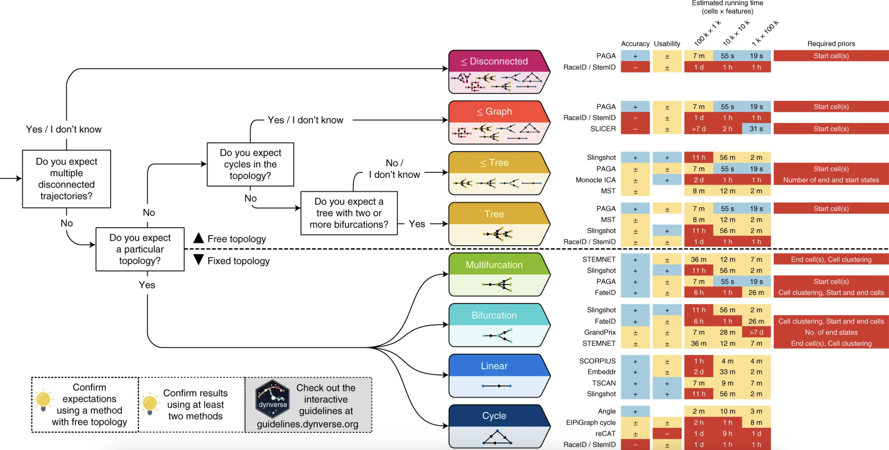
Setup
# Bioconductor
library(SingleCellExperiment)
library(TSCAN)
library(M3Drop)
library(monocle)
library(destiny)
library(scater)
library(slingshot)
# Other
library(ggplot2)
library(ggthemes)
library(ggbeeswarm)
library(corrplot)
library(Polychrome)
set.seed(1)Exploratory Data Analysis
Load Data
Optional: this data is originally downloaded from the Wellcome Sanger Institute.
#!/usr/bin/env bash
# download course data
aws --endpoint-url https://cog.sanger.ac.uk --no-sign-request s3 cp s3://singlecellcourse/data data --recursivedeng_SCE <- readRDS("../pseudotime_data/deng/deng-reads.rds")
image_dir <- "../pseudotime_data/images/"structure(deng_SCE)class: SingleCellExperiment
dim: 22431 268
metadata(0):
assays(2): counts logcounts
rownames(22431): Hvcn1 Gbp7 ... Sox5 Alg11
rowData names(10): feature_symbol is_feature_control ... total_counts
log10_total_counts
colnames(268): 16cell 16cell.1 ... zy.2 zy.3
colData names(30): cell_type2 cell_type1 ... pct_counts_ERCC
is_cell_control
reducedDimNames(0):
mainExpName: NULL
altExpNames(0):PCA
Prior to using pseudotime methods, let’s take a first look at our dataset by using PCA. We see that PCA performs relatively well up until distinguishing between the cell types earlyblast, midblast, and lateblast.
# Re-order the levels of the factor storing the cell developmental stage.
deng_SCE$cell_type2 <- factor(deng_SCE$cell_type2,
levels = c("zy", "early2cell", "mid2cell", "late2cell",
"4cell", "8cell", "16cell", "earlyblast",
"midblast", "lateblast")
)
cellLabels <- deng_SCE$cell_type2
deng <- counts(deng_SCE)
colnames(deng) <- cellLabels
# Run PCA
deng_SCE <- runPCA(deng_SCE, ncomponent = 5)
# Change color palette with library(Polychrome)
set.seed(723451) # for reproducibility
my_color <- createPalette(10, c("#010101", "#ff0000"), M=1000)
names(my_color) <- unique(as.character(deng_SCE$cell_type2))
# Use the reducedDim function to access the PCA and store the results.
pca_df <- data.frame(PC1 = reducedDim(deng_SCE,"PCA")[,1],
PC2 = reducedDim(deng_SCE,"PCA")[,2],
cell_type2 = deng_SCE$cell_type2)
ggplot(data = pca_df) +
geom_point(mapping = aes(x = PC1, y = PC2, colour = cell_type2)) +
scale_colour_manual(values = my_color) + theme_classic() +
xlab("PC1") + ylab("PC2") + ggtitle("PC biplot")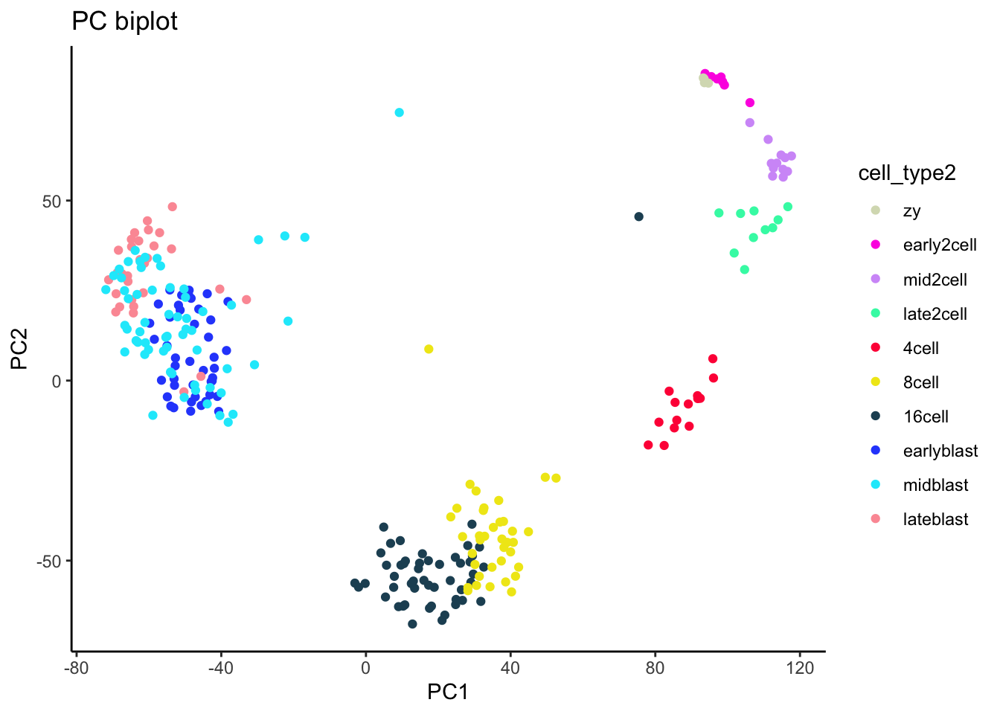
Naive Pseudotime (ordering by first PC)
# Add PCA data (first two PCs) to the deng_SCE object.
# deng_SCE$PC1 <- reducedDim(deng_SCE, "PCA")[,1]
# deng_SCE$PC2 <- reducedDim(deng_SCE, "PCA")[,2]
ggplot(pca_df, aes(x = PC1, y = cell_type2, colour = cell_type2)) +
geom_quasirandom(groupOnX = FALSE) +
scale_colour_manual(values = my_color) + theme_classic() +
xlab("PC1") + ylab("Timepoint") +
ggtitle("Cells ordered by first principal component")Orientation inferred to be along y-axis; override with
`position_quasirandom(orientation = 'x')`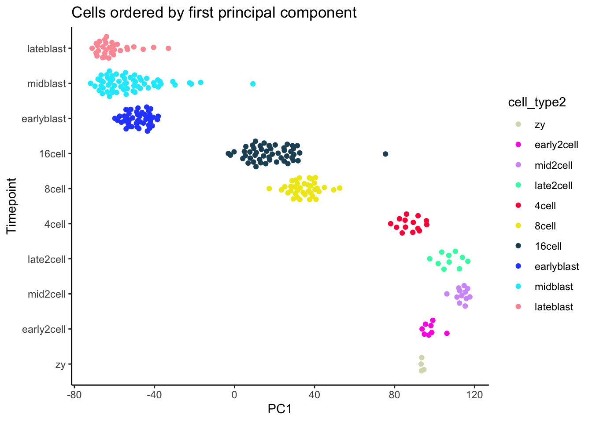
ggsave(paste0(image_dir, "/pseudotime_PC1.png"))Saving 7 x 5 in image
Orientation inferred to be along y-axis; override with
`position_quasirandom(orientation = 'x')`As the plot above shows, PCA struggles to order cells early and late in the developmental timeline, but overall does a relatively good job of ordering other cells by developmental time.
Now, let’s explore bespoke pseudotime methods.
TSCAN
Description
TSCAN (Ji and Ji 2019) combines clustering with pseudotime analysis. First it clusters the cells using mclust, which is based on a mixture of normal distributions. Then it builds a minimum spanning tree (MST) to connect the clusters. The branch of this MST that connects the largest number of clusters is designated the main branch, and is used to determine pseudotime.
Note: From a connected graph with weighted edges, the MST is the tree structure that connects all the nodes in a manner that minimizes the total edge weight. Trajectory inference methods that use MST are based on the notion that nodes (cells/clusters of cells) and their connections represent the geometric shape of the data cloud in a two-dimension space.
Cluster and order cells
First, let’s try to use all available genes to order cells.
procdeng <- TSCAN::preprocess(counts(deng_SCE))
colnames(procdeng) <- 1:ncol(deng_SCE)
dengclust <- TSCAN::exprmclust(procdeng, clusternum = 10)
TSCAN::plotmclust(dengclust)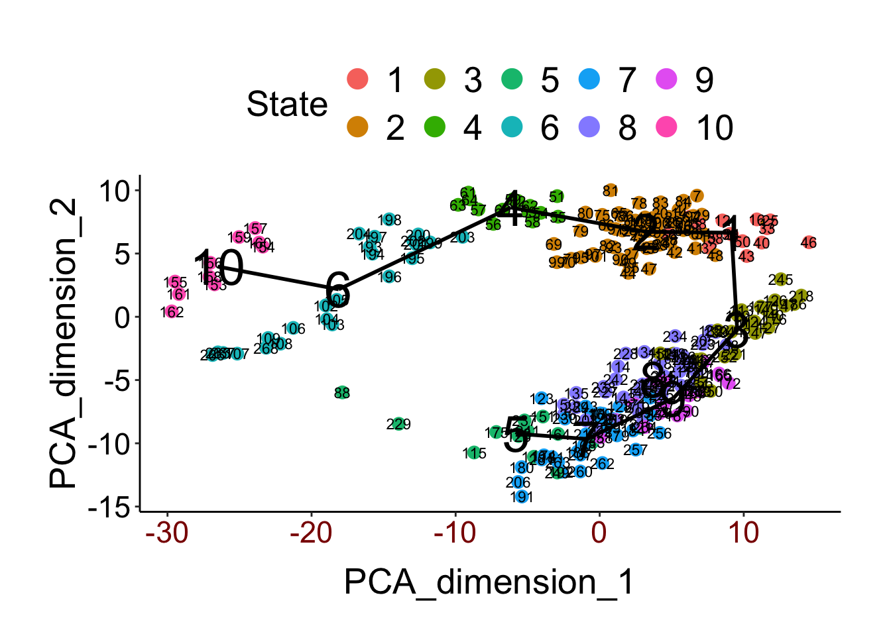
# Note: This only contains 221 of 268 genes... what's going on?
dengorderTSCAN <- TSCAN::TSCANorder(dengclust, orderonly = FALSE)
pseudotime_order_tscan <- as.character(dengorderTSCAN$sample_name)
deng_SCE$pseudotime_order_tscan <- NA
deng_SCE$pseudotime_order_tscan[as.numeric(dengorderTSCAN$sample_name)] <-
dengorderTSCAN$Pseudotime⚠️ Alert: In this scenario, TSCAN only provided pseudotime values for 221 of 268 cells, silently returning missing values for non-assigned cells.
Let’s examine which timepoints have been assigned to each state:
cellLabels[dengclust$clusterid == 10] [1] late2cell late2cell late2cell late2cell late2cell late2cell late2cell
[8] late2cell late2cell late2cell
10 Levels: zy early2cell mid2cell late2cell 4cell 8cell 16cell ... lateblastPlot cell pseudotime order
Now, let’s plot TSCAN’s pseudotime order:
ggplot(as.data.frame(colData(deng_SCE)),
aes(x = pseudotime_order_tscan,
y = cell_type2, colour = cell_type2)) +
geom_quasirandom(groupOnX = FALSE) +
scale_color_manual(values = my_color) + theme_classic() +
xlab("TSCAN pseudotime") + ylab("Timepoint") +
ggtitle("Cells ordered by TSCAN pseudotime")Orientation inferred to be along y-axis; override with
`position_quasirandom(orientation = 'x')`Warning: Removed 47 rows containing missing values or values outside the scale range
(`position_quasirandom()`).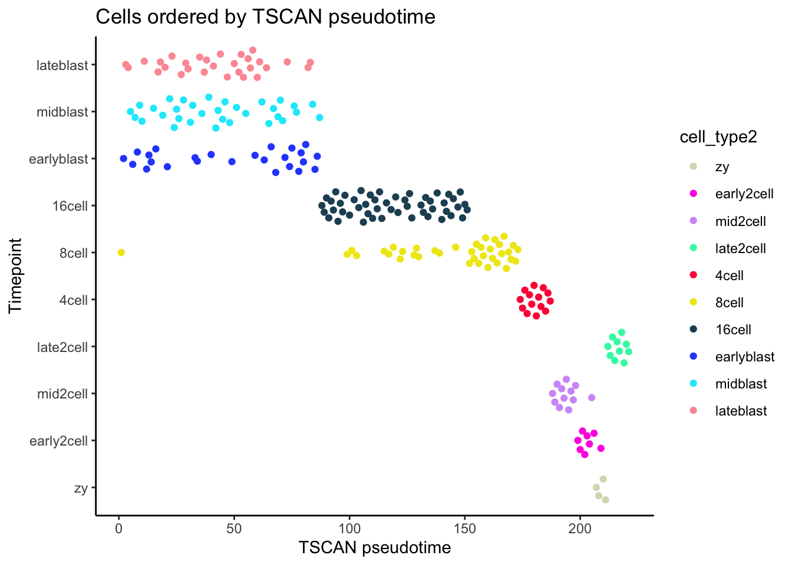
ggsave(paste0(image_dir, "/pseudotime_TSCAN.png"))Saving 7 x 5 in image
Orientation inferred to be along y-axis; override with
`position_quasirandom(orientation = 'x')`Warning: Removed 47 rows containing missing values or values outside the scale range
(`position_quasirandom()`).Conclusion
In this scenario, TSCAN gets the development trajectory the “wrong way around”, in the sense that later pseudotime values correspond to early timepoints and vice versa.
This is not inherently a problem (it is easy enough to reverse the ordering to get the intuitive interpretation of pseudotime), however, on this dataset, it’s tough to argue that TSCAN performs better than PCA (perhaps expected as TSCAN is based on PCA).
Slingshot
Description
Slingshot (Street et al. 2018) is a single-cell lineage inference tool. It can work with datasets with multiple branches.
Slingshot has two stages:
- inference of the global lineage structure using MST on clustered data points and
- inference of pseudotime variables for cells along each lineage by fitting “simultaneous principal curves” across multiple lineages.
Slingshot’s first stage uses a cluster-based MST to stably identify the key elements of the global lineage structure, i.e., the number of lineages and where they branch. This allows us to identify novel lineages while also accommodating the use of domain-specific knowledge to supervise parts of the tree (e.g., terminal cellular states).
For the second stage, Slingshot proposes a novel method called “simultaneous principal curves”, to fit smooth branching curves to these lineages, thereby translating the knowledge of global lineage structure into stable estimates of the underlying cell-level pseudotime variable for each lineage.
In Saelens et al., Slingshot consistently performs well across different datasets.
Note: Principal curves are smooth one-dimensional curves that pass through the middle of a p-dimensional data set, providing a nonlinear summary of the data. They are nonparametric, and their shape is suggested by the data (Hastie et al)(Hastie and Stuetzle 1989).
Cluster and order cells
# Run Slingshot
deng_SCE <- slingshot(deng_SCE, clusterLabels = 'cell_type2', reducedDim = "PCA",
allow.breaks = FALSE)summary(deng_SCE$slingPseudotime_1) Min. 1st Qu. Median Mean 3rd Qu. Max. NA's
0.0 231.7 265.8 269.9 360.6 409.4 52 # Get lineages inferred by Slingshot
lnes <- getLineages(reducedDim(deng_SCE,"PCA"),
deng_SCE$cell_type2)lnes@metadata$lineages$Lineage1
[1] "zy" "early2cell" "mid2cell" "late2cell" "4cell"
[6] "16cell" "midblast" "earlyblast"
$Lineage2
[1] "zy" "early2cell" "mid2cell" "late2cell" "4cell"
[6] "16cell" "midblast" "lateblast"
$Lineage3
[1] "zy" "early2cell" "mid2cell" "late2cell" "4cell"
[6] "16cell" "8cell" Plot lineage and pseudotime order
# Plot lineage overlay on the original PCA plot
plot(reducedDims(deng_SCE)$PCA, col = my_color[as.character(deng_SCE$cell_type2)],
pch=16,
asp = 1)
legend("bottomleft",legend = names(my_color[levels(deng_SCE$cell_type2)]),
fill = my_color[levels(deng_SCE$cell_type2)])
lines(SlingshotDataSet(deng_SCE), lwd=2, type = 'lineages', col = c("black"))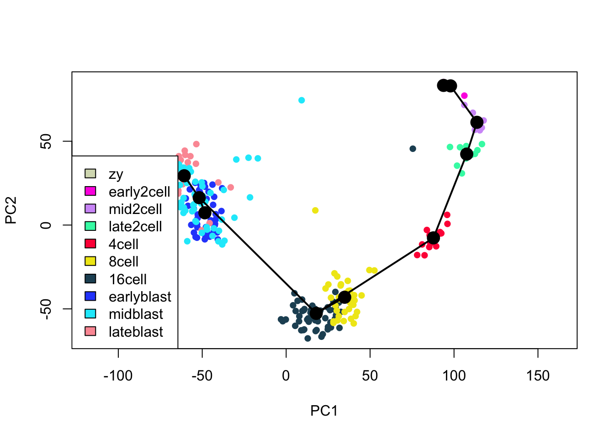
# NOTE/TODO: custom subset because as.data.frame does NOT work on full colData due to custom type PseudotimeOrdering of slingshot column!
slingshot_df <- as.data.frame(
colData(deng_SCE)[, names(colData(deng_SCE)) %in%
c("cell_type2", "slingPseudotime_1", "slingPseudotime_2", "slingPseudotime_3")])# Plot pseudotime inferred by slingshot by cell types (lineage 1)
ggplot(slingshot_df, aes(x = slingPseudotime_1, y = cell_type2,
colour = cell_type2)) +
geom_quasirandom(groupOnX = FALSE) + theme_classic() +
xlab("1st Slingshot pseudotime") + ylab("cell type") +
ggtitle("Cells ordered by 1st Slingshot pseudotime")+scale_colour_manual(values = my_color)Orientation inferred to be along y-axis; override with
`position_quasirandom(orientation = 'x')`Warning: Removed 52 rows containing missing values or values outside the scale range
(`position_quasirandom()`).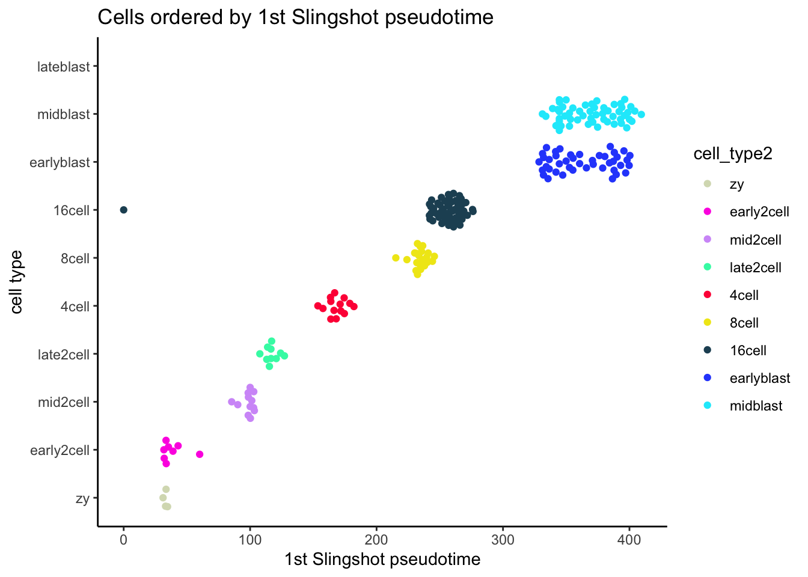
ggsave(paste0(image_dir, "/pseudotime_slingshot1.png"))Saving 7 x 5 in image
Orientation inferred to be along y-axis; override with
`position_quasirandom(orientation = 'x')`Warning: Removed 52 rows containing missing values or values outside the scale range
(`position_quasirandom()`).ggplot(slingshot_df, aes(x = slingPseudotime_2, y = cell_type2,
colour = cell_type2)) +
geom_quasirandom(groupOnX = FALSE) + theme_classic() +
xlab("2nd Slingshot pseudotime") + ylab("cell type") +
ggtitle("Cells ordered by 2nd Slingshot pseudotime")+scale_colour_manual(values = my_color)Orientation inferred to be along y-axis; override with
`position_quasirandom(orientation = 'x')`Warning: Removed 54 rows containing missing values or values outside the scale range
(`position_quasirandom()`).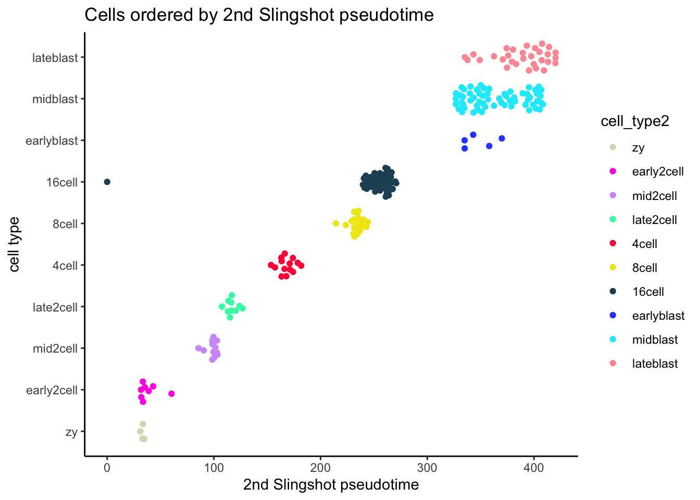
ggplot(slingshot_df, aes(x = slingPseudotime_1, y = slingPseudotime_2,
colour = cell_type2)) +
geom_quasirandom(groupOnX = FALSE) + theme_classic() +
xlab("1st Slingshot pseudotime") + ylab("2nd Slingshot pseudotime") +
ggtitle("Cells ordered by 1st and 2nd Slingshot pseudotimes")+scale_colour_manual(values = my_color)Warning: Removed 54 rows containing missing values or values outside the scale range
(`position_quasirandom()`).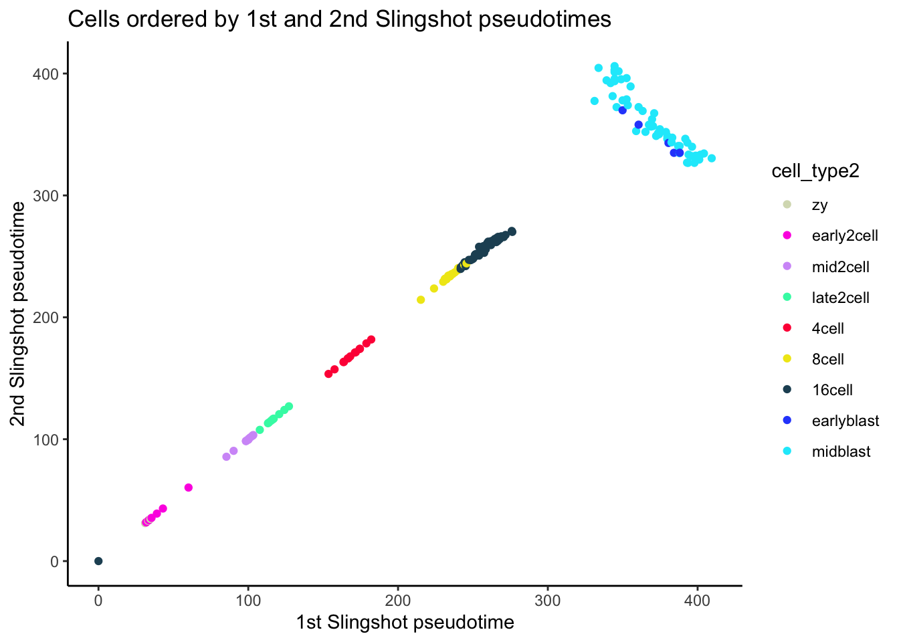
Note: You can also supply a start and an end cluster to
Slingshot.⚠️ Comment: Did you notice the ordering of clusters in the lineage predicted for the
16cellsstate? There is an outlier-like cell in the16cellgroup, find the outlier and remove it, then re-runSlingshot.
Identify temporally expressed genes using GAMs (Generalized Additive Models)
After running Slingshot, we may want to find genes that change their expression over the course of development.
Let’s explore one possible method of analysis on the 100 most variable genes in this dataset. We will first regress each gene on the pseudotime variable we have created using a general additive model (GAM). This will allow us to detect non-linear patterns in gene expression.
library(gam)Loading required package: foreachLoaded gam 1.22-4
Attaching package: 'gam'The following object is masked from 'package:VGAM':
st <- deng_SCE$slingPseudotime_1
# For demonstration purposes, only look at the 100 most variable genes
Y <- log1p(assay(deng_SCE,"logcounts"))
var100 <- names(sort(apply(Y,1,var),decreasing = TRUE))[1:100]
Y <- Y[var100,]
# Fit a GAM with a loess term for pseudotime
gam.pval <- apply(Y,1,function(z){
d <- data.frame(z=z, t=t)
suppressWarnings({
tmp <- gam(z ~ lo(t), data=d)
})
p <- summary(tmp)[3][[1]][2,3]
p
})
## Plot expression for top 100 genes
topgenes <- names(sort(gam.pval, decreasing = FALSE))[1:100]
heatdata <- assays(deng_SCE)$logcounts[topgenes, order(t, na.last = NA)]
heatclus <- deng_SCE$cell_type2[order(t, na.last = NA)]
heatmap(heatdata, Colv = NA,
ColSideColors = my_color[heatclus],cexRow = 1,cexCol = 1)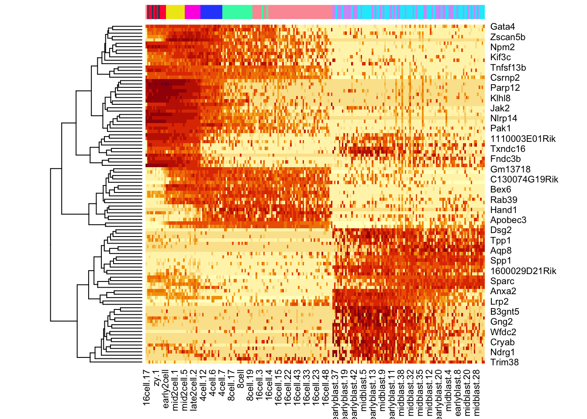
Monocle
The original Monocle (Trapnell et al. 2014) method skips the clustering stage of TSCAN and directly builds a MST on a reduced dimension representation (using “ICA”) of the cells to connect all cells. Monocle then identifies the longest path in this tree as the main branch and uses this to determine pseudotime. Priors are required such as start/end state and the number of branching events.
If the data contains diverging trajectories (i.e. one cell type differentiates into two different cell-types), monocle can identify these. Each of the resulting forked paths is defined as a separate cell state.
Monocle 2
Description
Monocle 2 (Qiu et al. 2017) uses a different approach, with dimensionality reduction and ordering performed by reverse graph embedding (RGE), allowing it to detect branching events in an unsupervised manner. RGE, a machine-learning strategy, learns a “principal graph” to describe the single-cell dataset. RGE also learns the mapping function of data points on the trajectory back to the original high dimensional space simultaneously. In doing so, it aims to position the latent points in the lower dimension space (along the trajectory) while also ensuring their corresponding positions in the input dimension are “neighbors”.
There are different ways of implementing the RGE framework, Monocle 2 uses DDRTree(Discriminative dimensionality reduction via learning a tree) by default.
DDRTree learns latent points and the projection of latent points to the points in original input space, which is equivalent to “dimension reduction”. In addition, it simultaneously learns ‘principal graph’ for K-means soft clustered centroids for the latent points. Principal graph is the spanning tree of those centroids.
DDRTree returns a principal tree of the centroids of cell clusters in low dimension, pseudotime is derived for individual cells by calculating geodesic distance of their projections onto the tree from the root (user-defined or arbitrarily assigned).
Note: Informally, a principal graph is like a principal curve which passes through the “middle” of a data set but is allowed to have branches.
Cluster and order cells
library(monocle)
# d <- deng_SCE[m3dGenes,]
# Feature selection
deng <- counts(deng_SCE)
m3dGenes <- as.character(
M3DropFeatureSelection(deng)$Gene
)Warning in bg__calc_variables(expr_mat): Warning: Removing 1134 undetected
genes.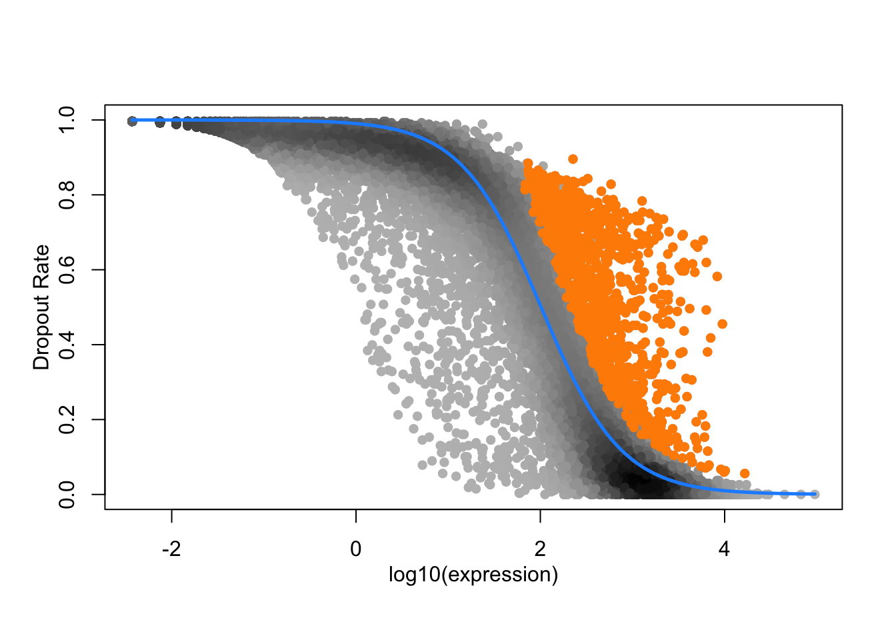
d <- deng_SCE[which(rownames(deng_SCE) %in% m3dGenes), ]
d <- d[!duplicated(rownames(d)), ]
colnames(d) <- 1:ncol(d)
geneNames <- rownames(d)
rownames(d) <- 1:nrow(d)
pd <- data.frame(timepoint = cellLabels)
pd <- new("AnnotatedDataFrame", data=pd)
fd <- data.frame(gene_short_name = geneNames)
fd <- new("AnnotatedDataFrame", data=fd)
dCellData <- newCellDataSet(counts(d), phenoData = pd, featureData = fd)
dCellData <- setOrderingFilter(dCellData, which(geneNames %in% m3dGenes))
dCellData <- estimateSizeFactors(dCellData)
dCellDataSet <- reduceDimension(dCellData,reduction_method = "DDRTree", pseudo_expr = 1)
dCellDataSet <- orderCells(dCellDataSet, reverse = FALSE)Warning in dfs(graph = graph, root = root, mode = mode, unreachable =
unreachable, : Argument `neimode' is deprecated; use `mode' instead
Warning in dfs(graph = graph, root = root, mode = mode, unreachable =
unreachable, : Argument `neimode' is deprecated; use `mode' insteadPlot pseudotime order
plot_cell_trajectory(dCellDataSet)Warning: `select_()` was deprecated in dplyr 0.7.0.
ℹ Please use `select()` instead.
ℹ The deprecated feature was likely used in the monocle package.
Please report the issue to the authors.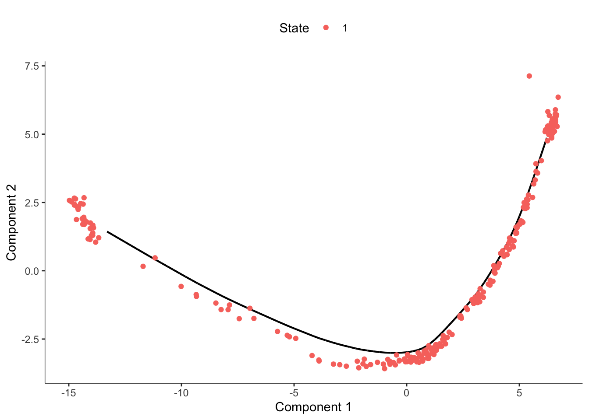
# Store trajectory ordering
pseudotime_monocle2 <-
data.frame(
Timepoint = phenoData(dCellDataSet)$timepoint,
pseudotime = phenoData(dCellDataSet)$Pseudotime,
State = phenoData(dCellDataSet)$State
)
rownames(pseudotime_monocle2) <- 1:ncol(d)
pseudotime_order_monocle <-
rownames(pseudotime_monocle2[order(pseudotime_monocle2$pseudotime), ])Let’s compare the inferred pseudotime to the known sampling timepoints.
deng_SCE$pseudotime_monocle2 <- pseudotime_monocle2$pseudotime
monocle2_df <- as.data.frame(
colData(deng_SCE)[, !names(colData(deng_SCE)) %in% c("slingshot")])
ggplot(monocle2_df,
aes(x = pseudotime_monocle2,
y = cell_type2, colour = cell_type2)) +
geom_quasirandom(groupOnX = FALSE) +
scale_color_manual(values = my_color) + theme_classic() +
xlab("monocle2 pseudotime") + ylab("Timepoint") +
ggtitle("Cells ordered by monocle2 pseudotime")Orientation inferred to be along y-axis; override with
`position_quasirandom(orientation = 'x')`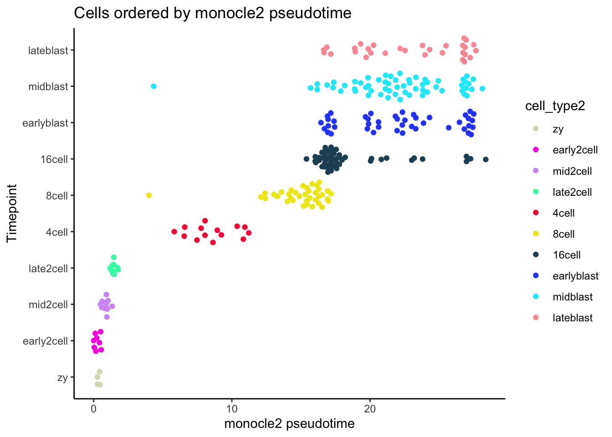
ggsave(paste0(image_dir, "/pseudotime_monocle2.png"))Saving 7 x 5 in image
Orientation inferred to be along y-axis; override with
`position_quasirandom(orientation = 'x')`Conclusion
Monocle 2 performs pretty well with ordering.
Monocle 3
Description
Monocle3 (Cao et al. 2019) is the latest version of Monocle, a single-cell analysis toolkit for analyzing large datasets. It is designed for use with absolute transcript counts (e.g. from UMI experiments). It first performs dimension reduction with UMAP, then clusters the cells with Louvain/Leiden algorithms and merges adjacent groups into supergroups, and final resolves individual cell trajectories within each supergroup.
TL;DR: Monocle3 uses UMAP to construct a initial trajectory inference and refines it with learning principal graph.
It builds a KNN graph in UMAP dimensions and runs Louvain/Leiden algorithms on the KNN graph to derive communities; edges are drawn to connect communities that have more links (via a Partitioned Approximate Graph Abstraction (PAGA) graph). Each component of the PAGA graph is passed to the next step: learning a “principal graph” based on the SimplePPT algorithm. Pseudotime is calculated for individual cells by projecting the cells to their nearest point on the principal graph edge and measure geodesic distance along of principal points to the closest of their root nodes.
monocle3_dengSCE_cell_metadata <- colData(deng_SCE)[, !names(colData(deng_SCE)) %in%
c("slingshot")] # TODO/NOTE: this works, clean up! turns out, data.frame does not play well with custom datatypes, $slingshot is of custom type PseudotimeOrderinglibrary(monocle3)
Attaching package: 'monocle3'The following objects are masked from 'package:monocle':
plot_genes_in_pseudotime, plot_genes_violin,
plot_pc_variance_explainedThe following objects are masked from 'package:Biobase':
exprs, fData, fData<-, pData, pData<-gene_meta <- rowData(deng_SCE)
#gene_metadata must contain a column verbatim named 'gene_short_name' for certain functions.
gene_meta$gene_short_name <- rownames(gene_meta)
cds <- new_cell_data_set(expression_data = counts(deng_SCE),
cell_metadata = monocle3_dengSCE_cell_metadata,
gene_metadata = gene_meta)
## Step 1: Normalize and pre-process the data
cds <- preprocess_cds(cds,num_dim = 5)
plot_pc_variance_explained(cds)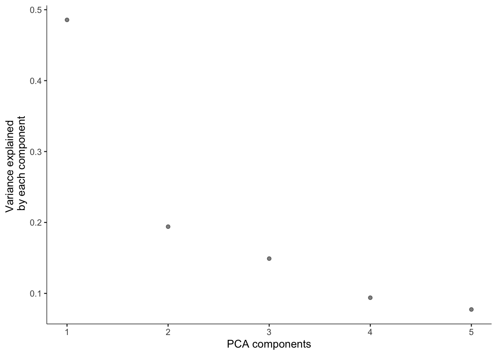
## Step 3: Reduce the dimensions using UMAP
cds <- reduce_dimension(cds)No preprocess_method specified, using preprocess_method = 'PCA'## Step 4: Cluster the cells
cds <- cluster_cells(cds)
## change the clusters
cds@clusters$UMAP$clusters <- deng_SCE$cell_type2
## Step 5: Learn a graph
cds <- learn_graph(cds, use_partition = FALSE)
|
| | 0%
|
|======================================================================| 100%## Step 6: Order cells
cds <- order_cells(cds, root_cells = c("zy","zy.1","zy.2","zy.3") )Plot pseudotime order
plot_cells(cds, color_cells_by="cell_type2", graph_label_size = 4, cell_size = 2,
group_label_size = 6) + scale_color_manual(values = my_color)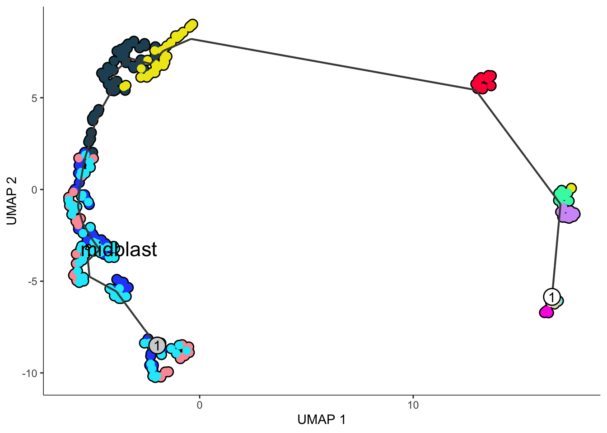
plot_cells(cds, graph_label_size = 6, cell_size = 1,
color_cells_by="pseudotime",
group_label_size = 6)Cells aren't colored in a way that allows them to be grouped.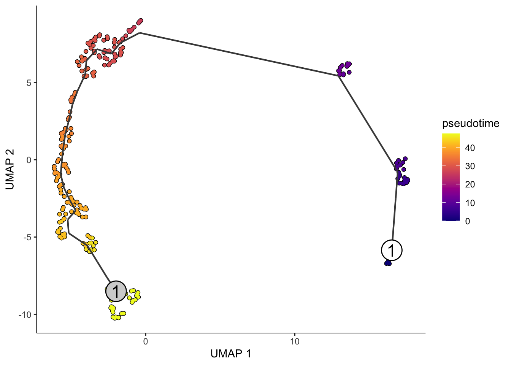
pdata_cds <- pData(cds)
pdata_cds$pseudotime_monocle3 <- monocle3::pseudotime(cds)
ggplot(as.data.frame(pdata_cds),
aes(x = pseudotime_monocle3,
y = cell_type2, colour = cell_type2)) +
geom_quasirandom(groupOnX = FALSE) +
scale_color_manual(values = my_color) + theme_classic() +
xlab("monocle3 pseudotime") + ylab("Timepoint") +
ggtitle("Cells ordered by monocle3 pseudotime")Orientation inferred to be along y-axis; override with
`position_quasirandom(orientation = 'x')`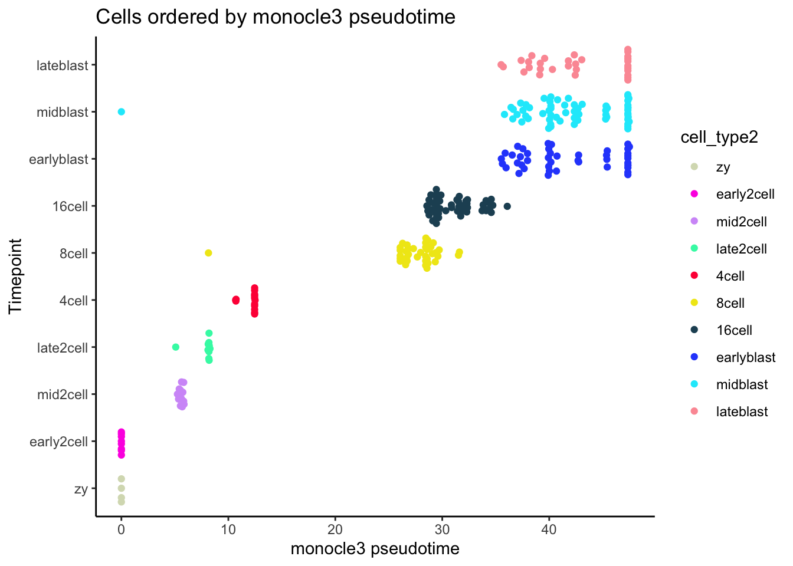
ggsave(paste0(image_dir, "/pseudotime_monocle3.png"))Saving 7 x 5 in image
Orientation inferred to be along y-axis; override with
`position_quasirandom(orientation = 'x')`Conclusion
Monocle3 does not seem to work well on this dataset.
Diffusion Maps
Description
Diffusion maps (Coifman and Lafon 2006) build on the underlying notion that the data are samples from a diffusion process. This method infers the low-dimensional manifold by estimating the eigenvalues and eigenvectors for the diffusion operator related to the data. More recently, Haghverdi et al. 2016 explored the use of this non-linear dimension reduction method in applications to estimate pseudotime of single-cell transcriptomic data:
As shown below, the method contains three steps:
- computing the overlap of local kernels at the expression levels of cells x and y;
- Diffusion pseudotime dpt(x,y) approximates the geodesic distance between x and y on the mapped manifold;
- Branching points are identified as points where anticorrelated distances from branch ends become correlated.
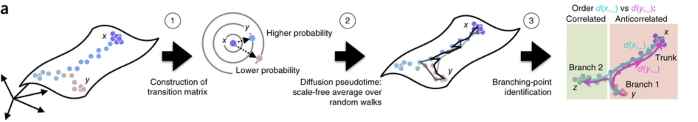
To explore this method, we will use destiny (Angerer et al. 2016), an R package that applies diffusion maps to the analysis of single-cell RNA-seq data.
Cluster and order cells
First, we will take the rank order of cells in the first diffusion map component as “diffusion map pseudotime” here.
# Prepare a counts matrix with labeled rows and columns.
deng <- logcounts(deng_SCE) # access log-transformed counts matrix
colnames(deng) <- cellLabels
# Make a diffusion map.
dm <- DiffusionMap(t(deng))Warning in DiffusionMap(t(deng)): You have 22431 genes. Consider passing e.g.
n_pcs = 50 to speed up computation.'as(<dsCMatrix>, "dgTMatrix")' is deprecated.
Use 'as(as(., "generalMatrix"), "TsparseMatrix")' instead.
See help("Deprecated") and help("Matrix-deprecated").# Optional: Try different sigma values when making diffusion map.
# dm <- DiffusionMap(t(deng), sigma = "local") # use local option to set sigma
# sigmas <- find_sigmas(t(deng), verbose = FALSE) # find optimal sigma
# dm <- DiffusionMap(t(deng), sigma = optimal_sigma(sigmas)) Plot pseudotime order
# Plot diffusion component 1 vs diffusion component 2 (DC1 vs DC2).
tmp <- data.frame(DC1 = eigenvectors(dm)[,1],
DC2 = eigenvectors(dm)[,2],
Timepoint = cellLabels)
ggplot(tmp, aes(x = DC1, y = DC2, colour = Timepoint)) +
geom_point() + scale_color_manual(values = my_color) +
theme_classic() +
xlab("Diffusion component 1") +
ylab("Diffusion component 2") +
ggtitle("Diffusion component biplot")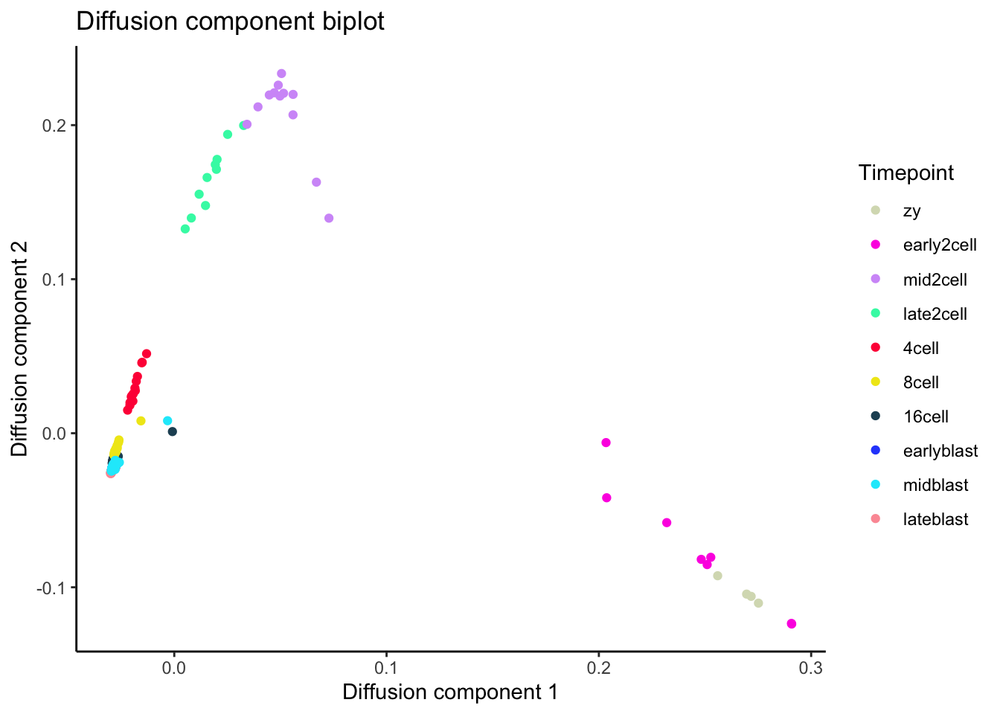
# Next, let us use the first diffusion component (DC1) as a measure of pseudotime.
# How does the separation by cell stage look?
deng_SCE$pseudotime_diffusionmap <- rank(eigenvectors(dm)[,1]) # rank cells by their dpt
diffusion_df <- as.data.frame(colData(deng_SCE)[, !names(colData(deng_SCE)) %in%
c("slingshot")])
ggplot(diffusion_df,
aes(x = pseudotime_diffusionmap,
y = cell_type2, colour = cell_type2)) +
geom_quasirandom(groupOnX = FALSE) +
scale_color_manual(values = my_color) + theme_classic() +
xlab("Diffusion component 1 (DC1)") +
ylab("Timepoint") +
ggtitle("Cells ordered by diffusion map pseudotime")Orientation inferred to be along y-axis; override with
`position_quasirandom(orientation = 'x')`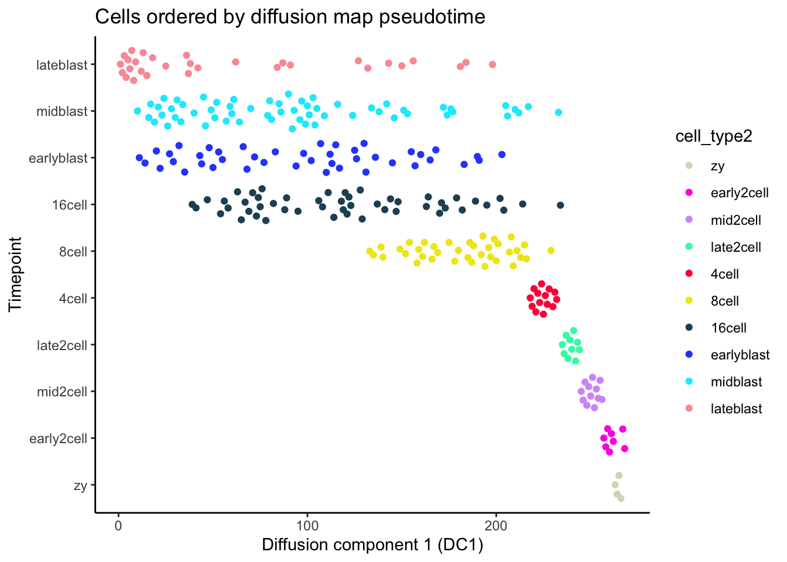
ggsave(paste0(image_dir, "/pseudotime_DC1.png"))Saving 7 x 5 in image
Orientation inferred to be along y-axis; override with
`position_quasirandom(orientation = 'x')`# Plot eigenvalues of diffusion distance matrix.
plot(eigenvalues(dm), ylim = 0:1, pch = 20, xlab = 'Diffusion component (DC)', ylab = 'Eigenvalue')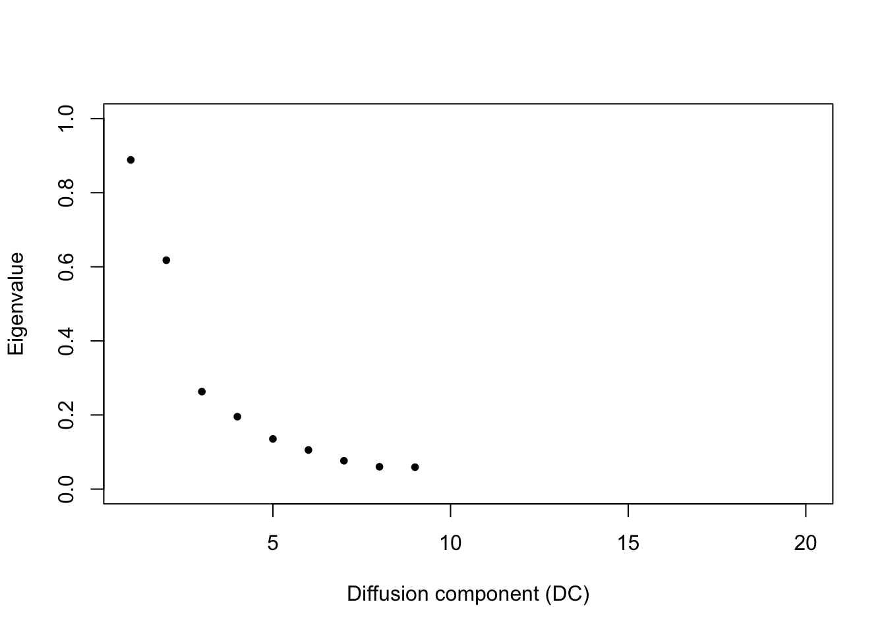
Conclusion
Like the other methods, using the first diffusion map component from destiny as pseudotime does a good job at ordering the early time-points (if we take high values as “earlier” in development), but it is unable to distinguish the later ones.
Comparing all methods
df_pseudotime <- colData(deng_SCE)[, !names(colData(deng_SCE)) %in%
c("slingshot")]
df_pseudotime <- as.data.frame(
df_pseudotime[, grep("pseudotime", colnames(df_pseudotime))]
)
colnames(df_pseudotime) <- gsub("pseudotime_", "",
colnames(df_pseudotime))
# NOTE: TSCAN and diffusion are backwards
df_pseudotime$PC1 <- reducedDim(deng_SCE,"PCA")[,1]
df_pseudotime$order_tscan <- -df_pseudotime$order_tscan
df_pseudotime$diffusionmap <- -df_pseudotime$diffusionmap
df_pseudotime$slingshot1 <- colData(deng_SCE)$slingPseudotime_1
df_pseudotime$monocle3 <- pdata_cds$pseudotime_monocle3
corrplot.mixed(cor(df_pseudotime, use = "na.or.complete"),
order = "hclust", tl.col = "black",
main = "Correlation matrix for pseudotime results",
mar = c(0, 0, 3.1, 0))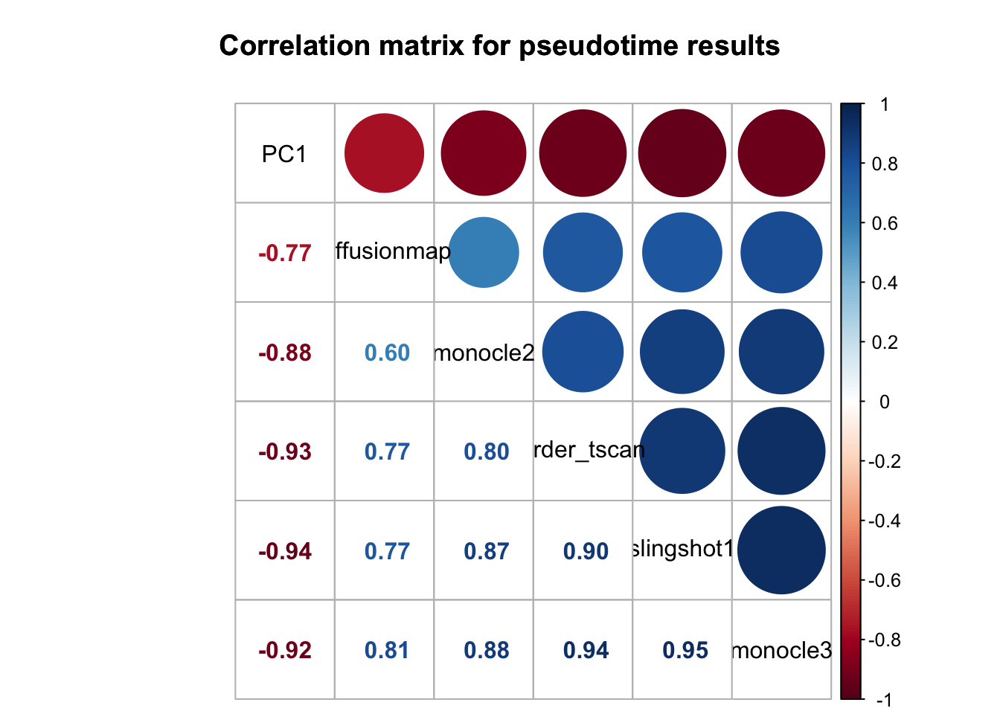
Conclusion
We see here that TSCAN generates a pseudotime trajectory that is similar to and strongly correlated with PC1. Diffusion Map pseudotime is less strongly correlated with these methods, and Slingshot pseudotime gives very different results.
Gene expression over time
Each package also enables the visualization of expression through pseudotime. Following individual genes is very helpful for identifying genes that play an important role in the differentiation process.
Let’s illustrate the procedure using the Nanog gene.
We have added the pseudotime values computed with all methods here to the colData slot of a SingleCellExperiment object. Now, we can utilize the scater package to investigate relationships between gene expression, cell populations, and pseudotime. This is particularly useful for packages that do not provide bespoke plotting functions.
Plot PC1
deng_SCE$PC1 <- -reducedDim(deng_SCE,"PCA")[,1]
plotExpression(deng_SCE, "Nanog", x = "PC1",
colour_by = "cell_type2", show_violin = FALSE,
show_smooth = TRUE)`geom_smooth()` using method = 'loess' and formula = 'y ~ x'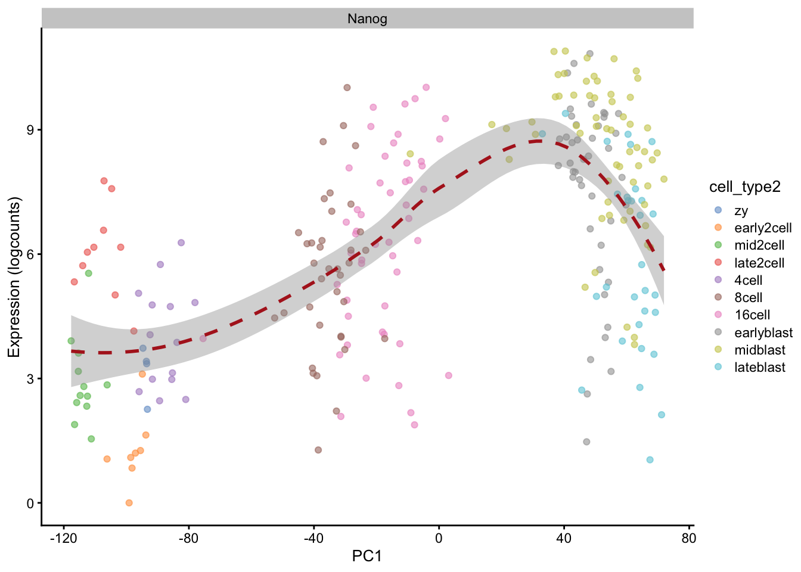
Plot TSCAN
plotExpression(deng_SCE, "Nanog", x = "pseudotime_order_tscan",
colour_by = "cell_type2", show_violin = FALSE,
show_smooth = TRUE)`geom_smooth()` using method = 'loess' and formula = 'y ~ x'Warning: Removed 47 rows containing non-finite outside the scale range
(`stat_smooth()`).Warning: Removed 47 rows containing missing values or values outside the scale range
(`geom_point()`).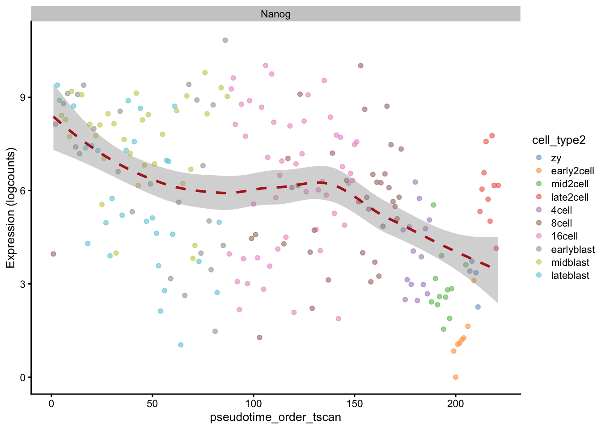
Plot Monocle 2
plotExpression(deng_SCE, "Nanog", x = "pseudotime_monocle2",
colour_by = "cell_type2", show_violin = FALSE,
show_smooth = TRUE)`geom_smooth()` using method = 'loess' and formula = 'y ~ x'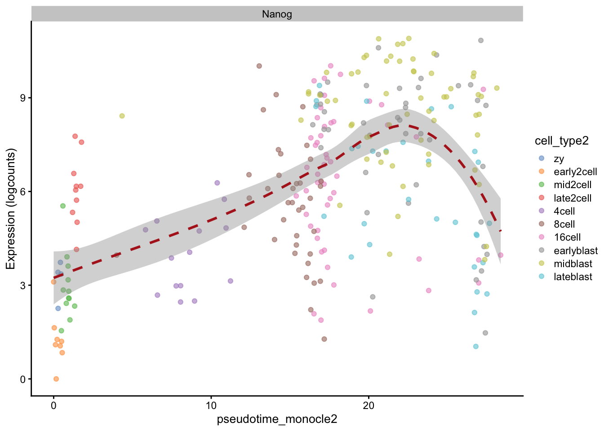
Plot Monocle 3
deng_SCE$pseudotime_monocle3 <- pdata_cds$pseudotime_monocle3
plotExpression(deng_SCE, "Nanog", x = "pseudotime_monocle3",
colour_by = "cell_type2", show_violin = FALSE,
show_smooth = TRUE)`geom_smooth()` using method = 'loess' and formula = 'y ~ x'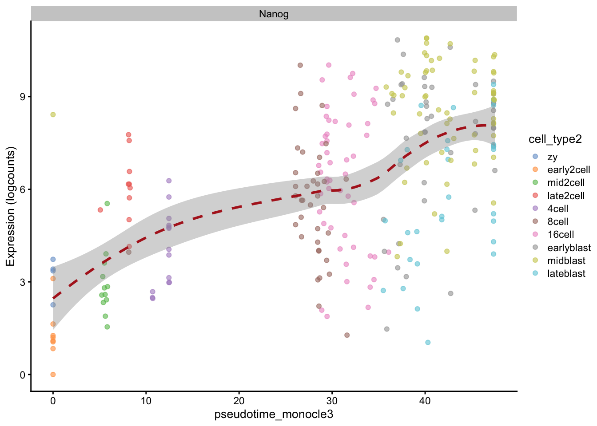
Plot Diffusion Map
plotExpression(deng_SCE, "Nanog", x = "pseudotime_diffusionmap",
colour_by = "cell_type2", show_violin = FALSE,
show_smooth = TRUE)`geom_smooth()` using method = 'loess' and formula = 'y ~ x'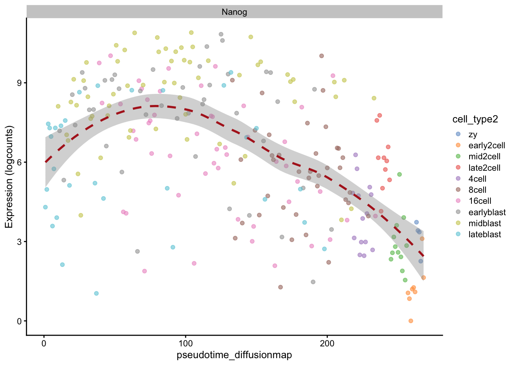
References
Prior Courses/Workshops
University of Cambridge scRNA-seq Workshop 2019 (Section 11)
Broad Institute scRNA-seq Workshop 2020 (Sections 13 and 14)
Papers/Articles
Angerer, Philipp, Laleh Haghverdi, Maren Büttner, Fabian J Theis, Carsten Marr, and Florian Buettner. 2016. “Destiny: Diffusion Maps for Large-Scale Single-Cell Data in R.” Bioinformatics 32 (8): 1241–3.
Cao, Junyue, Malte Spielmann, Xiaojie Qiu, Xingfan Huang, Daniel M Ibrahim, Andrew J Hill, Fan Zhang, et al. 2019. “The Single-Cell Transcriptional Landscape of Mammalian Organogenesis.” Nature 566 (7745): 496–502.
Coifman, Ronald R, and Stéphane Lafon. 2006. “Diffusion Maps.” Appl. Comput. Harmon. Anal. 21 (1): 5–30.
Deng, Q., D. Ramskold, B. Reinius, and R. Sandberg. 2014. “Single-Cell RNA-Seq Reveals Dynamic, Random Monoallelic Gene Expression in Mammalian Cells.” Science 343 (6167). American Association for the Advancement of Science (AAAS): 193–96. https://doi.org/10.1126/science.1245316.
Hastie, Trevor, and Werner Stuetzle. 1989. “Principal Curves.” AT&T Bell Laboratories, Murray Hill; Journal of the American Statistical Association.
Ji, Zhicheng, and Hongkai Ji. 2019. TSCAN: TSCAN: Tools for Single-Cell Analysis.
Qiu, Xiaojie, Qi Mao, Ying Tang, Li Wang, Raghav Chawla, Hannah A Pliner, and Cole Trapnell. 2017. “Reversed Graph Embedding Resolves Complex Single-Cell Trajectories.” Nat. Methods 14 (10): 979–82.
Saelens, Wouter, Robrecht Cannoodt, Helena Todorov, and Yvan Saeys. 2019. “A Comparison of Single-Cell Trajectory Inference Methods.” Nature Biotechnology 37 (5). Nature Publishing Group: 547.
Street, Kelly, Davide Risso, Russell B Fletcher, Diya Das, John Ngai, Nir Yosef, Elizabeth Purdom, and Sandrine Dudoit. 2018. “Slingshot: Cell Lineage and Pseudotime Inference for Single-Cell Transcriptomics.” BMC Genomics 19 (1): 477.
Trapnell, Cole, Davide Cacchiarelli, Jonna Grimsby, Prapti Pokharel, Shuqiang Li, Michael Morse, Niall J Lennon, Kenneth J Livak, Tarjei S Mikkelsen, and John L Rinn. 2014. “The Dynamics and Regulators of Cell Fate Decisions Are Revealed by Pseudotemporal Ordering of Single Cells.” Nat. Biotechnol. 32 (4): 381–86.
Code Internals
Session Info
sessionInfo()R version 4.4.1 (2024-06-14)
Platform: aarch64-apple-darwin20
Running under: macOS Sonoma 14.5
Matrix products: default
BLAS: /Library/Frameworks/R.framework/Versions/4.4-arm64/Resources/lib/libRblas.0.dylib
LAPACK: /Library/Frameworks/R.framework/Versions/4.4-arm64/Resources/lib/libRlapack.dylib; LAPACK version 3.12.0
locale:
[1] en_US.UTF-8/en_US.UTF-8/en_US.UTF-8/C/en_US.UTF-8/en_US.UTF-8
time zone: America/New_York
tzcode source: internal
attached base packages:
[1] splines stats4 stats graphics grDevices utils datasets
[8] methods base
other attached packages:
[1] monocle3_1.3.7 gam_1.22-4
[3] foreach_1.5.2 Polychrome_1.5.1
[5] corrplot_0.92 ggbeeswarm_0.7.2
[7] ggthemes_5.1.0 slingshot_2.12.0
[9] princurve_2.1.6 scater_1.32.1
[11] scuttle_1.14.0 destiny_3.18.0
[13] monocle_2.32.0 DDRTree_0.1.5
[15] irlba_2.3.5.1 VGAM_1.1-11
[17] ggplot2_3.5.1 Matrix_1.7-0
[19] M3Drop_1.30.0 numDeriv_2016.8-1.1
[21] TSCAN_1.42.0 TrajectoryUtils_1.12.0
[23] SingleCellExperiment_1.26.0 SummarizedExperiment_1.34.0
[25] Biobase_2.64.0 GenomicRanges_1.56.1
[27] GenomeInfoDb_1.40.1 IRanges_2.38.1
[29] S4Vectors_0.42.1 BiocGenerics_0.50.0
[31] MatrixGenerics_1.16.0 matrixStats_1.3.0
[33] BiocManager_1.30.23
loaded via a namespace (and not attached):
[1] bitops_1.0-8 httr_1.4.7
[3] RColorBrewer_1.1-3 tools_4.4.1
[5] backports_1.5.0 utf8_1.2.4
[7] R6_2.5.1 uwot_0.2.2
[9] mgcv_1.9-1 withr_3.0.1
[11] sp_2.1-4 gridExtra_2.3
[13] cli_3.6.3 textshaping_0.4.0
[15] labeling_0.4.3 slam_0.1-52
[17] mvtnorm_1.2-5 robustbase_0.99-3
[19] proxy_0.4-27 QuickJSR_1.3.1
[21] systemfonts_1.1.0 StanHeaders_2.32.10
[23] foreign_0.8-87 parallelly_1.38.0
[25] bbmle_1.0.25.1 limma_3.60.4
[27] TTR_0.24.4 rstudioapi_0.16.0
[29] generics_0.1.3 combinat_0.0-8
[31] gtools_3.9.5 car_3.1-2
[33] dplyr_1.1.4 inline_0.3.19
[35] loo_2.8.0 fansi_1.0.6
[37] abind_1.4-5 lifecycle_1.0.4
[39] scatterplot3d_0.3-44 yaml_2.3.10
[41] carData_3.0-5 gplots_3.1.3.1
[43] SparseArray_1.4.8 Rtsne_0.17
[45] grid_4.4.1 promises_1.3.0
[47] crayon_1.5.3 bdsmatrix_1.3-7
[49] reldist_1.7-2 densEstBayes_1.0-2.2
[51] lattice_0.22-6 cowplot_1.1.3
[53] beachmat_2.20.0 pillar_1.9.0
[55] knitr_1.48 boot_1.3-30
[57] codetools_0.2-20 glue_1.7.0
[59] leidenbase_0.1.30 V8_4.4.2
[61] pcaMethods_1.96.0 data.table_1.15.4
[63] vcd_1.4-12 vctrs_0.6.5
[65] gtable_0.3.5 assertthat_0.2.1
[67] xfun_0.46 S4Arrays_1.4.1
[69] mime_0.12 RcppEigen_0.3.4.0.0
[71] HSMMSingleCell_1.24.0 pheatmap_1.0.12
[73] iterators_1.0.14 fastICA_1.2-4
[75] statmod_1.5.0 nlme_3.1-165
[77] xts_0.14.0 RcppAnnoy_0.0.22
[79] rstan_2.32.6 vipor_0.4.7
[81] KernSmooth_2.23-24 rpart_4.1.23
[83] colorspace_2.1-1 Hmisc_5.1-3
[85] nnet_7.3-19 tidyselect_1.2.1
[87] smoother_1.3 compiler_4.4.1
[89] curl_5.2.1 htmlTable_2.4.3
[91] BiocNeighbors_1.22.0 DelayedArray_0.30.1
[93] checkmate_2.3.2 scales_1.3.0
[95] caTools_1.18.2 DEoptimR_1.1-3
[97] lmtest_0.9-40 hexbin_1.28.3
[99] stringr_1.5.1 digest_0.6.36
[101] minqa_1.2.7 rmarkdown_2.27
[103] XVector_0.44.0 htmltools_0.5.8.1
[105] pkgconfig_2.0.3 base64enc_0.1-3
[107] lme4_1.1-35.5 sparseMatrixStats_1.16.0
[109] fastmap_1.2.0 rlang_1.1.4
[111] htmlwidgets_1.6.4 UCSC.utils_1.0.0
[113] shiny_1.9.1 DelayedMatrixStats_1.26.0
[115] farver_2.1.2 zoo_1.8-12
[117] jsonlite_1.8.8 BiocParallel_1.38.0
[119] mclust_6.1.1 BiocSingular_1.20.0
[121] magrittr_2.0.3 Formula_1.2-5
[123] GenomeInfoDbData_1.2.12 munsell_0.5.1
[125] Rcpp_1.0.13 viridis_0.6.5
[127] stringi_1.8.4 zlibbioc_1.50.0
[129] MASS_7.3-61 plyr_1.8.9
[131] pkgbuild_1.4.4 parallel_4.4.1
[133] listenv_0.9.1 ggrepel_0.9.5
[135] igraph_2.0.3 ranger_0.16.0
[137] RcppHNSW_0.6.0 reshape2_1.4.4
[139] ScaledMatrix_1.12.0 rstantools_2.4.0
[141] evaluate_0.24.0 RcppParallel_5.1.8
[143] laeken_0.5.3 nloptr_2.1.1
[145] httpuv_1.6.15 VIM_6.2.2
[147] RANN_2.6.1 tidyr_1.3.1
[149] purrr_1.0.2 knn.covertree_1.0
[151] future_1.34.0 rsvd_1.0.5
[153] xtable_1.8-4 e1071_1.7-14
[155] RSpectra_0.16-2 later_1.3.2
[157] viridisLite_0.4.2 class_7.3-22
[159] ragg_1.3.2 tibble_3.2.1
[161] beeswarm_0.4.0 cluster_2.1.6
[163] ggplot.multistats_1.0.0 globals_0.16.3 Debugging
- When running Monocle3, learning the partition graph can be a bit finicky. You may need to play around with settings like
use_partitionand the total number of partitions.